ギズモード・ジャパン
https://www.gizmodo.jp
日本最大のテクノロジー＆ガジェット専門メディア。YouTubeや記事を通じて、最新ガジェットの偏愛レビューから、AI／サイエンスの深掘りコンテンツまで幅広く発信しています。「みんなで探求する」を合言葉に、刺激的な未来の体験をシェアします。
フィード
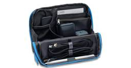
作業を止めてでも確保急いで！ Ankerの神ポーチがセールに参戦
ギズモード・ジャパン
Ankerとコクヨのコラボによる大人気ガジェットポーチがセールに初登場。考え抜かれた収納力と自立する使いやすさで話題のアイテムを、お得に手に入れるチャンスです。
2時間前
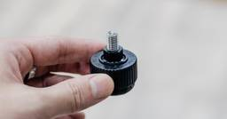
カフェの罠「テーブルがガタガタするやつ」を必ず止めるアジャスター
ギズモード・ジャパン
誰もが経験したことはある「あ、このテーブルガタガタしやすいから気をつけて食事しないと…」なストレスを自動で解消する「T.balance」。油圧とスプリングの力で、置くだけでなめらかに段差にフィット。飲食店のストレスをゼロにする画期的なアジャスターです。
3時間前
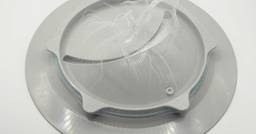
排水溝のネット、フタに付けちゃえばよかったんだ
ギズモード・ジャパン
2024年2月16日の記事を編集して再掲載しています。これ1枚で心もスッキリ。台所の流しにある排水溝ですが、ゴミ受け（水切りカゴ）にネットをかけて生ゴミを受け止めている人は多いと思います。軽く絞れば水切りができ、そのまま捨てられますもんね。…
11時間前
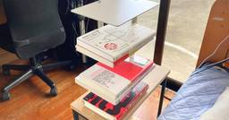
積読（つんどく）のハードルがめちゃくちゃ下がる。「出版社が考えた本棚」が画期的だった
ギズモード・ジャパン
出版社が開発した積読（つんどく）解消アイテム「積読ホルダー」のレビュー。インテリアに馴染む美しいデザインや、読みたい本にすぐアクセスできる便利な機能で読書習慣がはかどる理由をご紹介します。
11時間前
1本でPCとスマホを同時に急速充電。Ankerの二股ケーブル使ってみた
ギズモード・ジャパン
身の回りのガジェットが増えるにつれて、充電管理は煩雑になる一方です。できれば、ケーブル類などのゴチャゴチャするものは、スッキリさせたいところでしょう。Ankerの「USB-C ＆ USB-C ケーブル（2-in-1, 140W）」は、2-in-1充電ケーブル。1本で2台同時充電を可能にしてくれるアイテムです。
12時間前
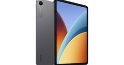
1万円台で120Hz、GooglePlay対応。こいつFireタブレットを滅ぼす気かよ… 1
1
ギズモード・ジャパン
Fireタブレット難民必見！1万円台で120Hzの高リフレッシュレートとGooglePlayに対応したシャオミの「REDMI Pad 2」の魅力を紹介します。
13時間前
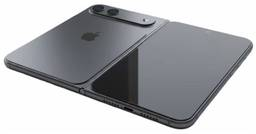
iPhone Duo、結局どう？ スペック・価格・発売日をガッツリおさらい 1
ギズモード・ジャパン
さぁ、買いますか。買いませんか。Appleが満を持してリリースした折りたたみスマホ、iPhone Duo（デュオ）。業界定番のFoldを使わず、二人組やペアを意味する単語を持ってきたあたり、Appleらしいなぁと思いませんか？それではスペッ…
13時間前
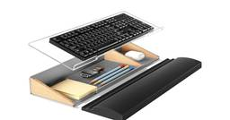
混雑終了のお知らせ。3,420円でキーボードの下を収納スペースに
ギズモード・ジャパン
LOEのリストレストデスクオーガナイザーでキーボードの下を収納スペースに。3,420円でデスク周りをすっきり整理できる便利なアイテムをご紹介します。
14時間前
Switch 2版『モンハンワイルズ』が12月6日発売。事前予約なら14%OFF
ギズモード・ジャパン
Amazonでは『モンスターハンターワイルズ デラックスエディション』Switch 2版がが事前予約14％オフ。クロスプレイ対応や予約特典の詳細を解説します。
15時間前
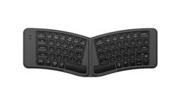
折りたたみキーボードの決定版！ タブレットのPC化は20％OFFの「B11 Pro」で完成する
ギズモード・ジャパン
タブレットをノートPC化する折りたたみキーボード「Keychron B11 Pro」の魅力をご紹介。Alice配列で快適なタイピングを実現し、今なら20%OFFでお得に手に入ります。
15時間前
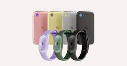
米AmazonがAIガジェット「Bee」発表。カードサイズのボイスレコーダーなど 1
ギズモード・ジャパン
米AmazonがAIガジェットを2モデル発表しました。リストバンド型の「Bee Frontier」とカード型の「Bee Eclipse」。AI要約ボイスレコーダーといえる端末で、ユーザーの会話をききとり、文字起こしや要約、会話から察して必要…
16時間前
150万円もらえるとしても｢ノー｣。データセンター建設に反対する小さな町の住民たち
ギズモード・ジャパン
AIの急増に伴うデータセンター建設ラッシュに対し、住民の反対運動が全米で拡大。1万ドル（150万円）のオファーを受けても拒否する理由と背景を解説します。
16時間前
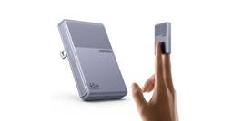
厚みも値段もスリムな快作。2,793円のお出かけ充電器は理想の1台
ギズモード・ジャパン
驚異的な薄さと安さを実現したUGREENの45W急速充電器をレビュー。MacBook Airも充電できる高いパワーと、ポケットに入る携帯性を兼ね備えた理想の1台です。
17時間前
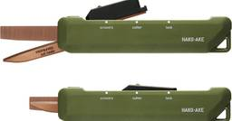
たくさん届く段ボール、ハサミにもカッターにもなる「ハコアケ」が正解
ギズモード・ジャパン
一家に1本。プライム感謝祭が始まって、みなさんいろいろお買い物をしていることでしょう。そうすると、毎日のようにAmazonから段ボールに入った商品が届きます。段ボールを開けるのって、意外と手間がかかりますが、効率よく開けていきたいならこちら…
17時間前
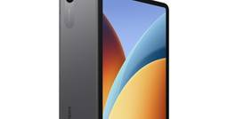
シャオミの2K/120Hzタブレット、1万円台で買えてしまうのか
ギズモード・ジャパン
Xiaomiのハイコスパタブレット「REDMI Pad 2 9.7」がAmazonプライム感謝祭で20％オフの1万円台に！120Hz対応の2Kディスプレイや大容量バッテリーを搭載し、動画視聴や電子書籍に最適な一台の魅力を紹介します。
19時間前
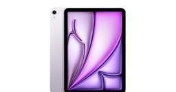
iPad Airを安く買う裏技教えちゃいます。なんとAmazonで買うだけで1万3000円引き！
ギズモード・ジャパン
Amazonで最新のiPad Airをお得に安く買う方法を解説。公式より1万3000円引きで購入できる裏技や、M4チップ搭載モデルを長く快適に使うメリットをご紹介します。
19時間前
冷凍ごはんは“ラップで包む派”に朗報。山崎実業の新作「ごはんガイド」で古いものから順に使いやすくなる！ 1
ギズモード・ジャパン
mio 家で働くフリーライター。とにかく家で過ごす時間が好き。簡単にモノが手に入る時代だからこそモノ選びは慎重派。下調べのうえ答え合わせをするような感覚で日用品を迎えています。手入れが楽な仕組みを見つけたい、だけど自分に心地のいい範囲で。そ...
19時間前
プロテイン、もう高すぎ？ 卵や鶏肉と「タンパク質のコスパ」を比べてみた
ギズモード・ジャパン
筋トレ民だけでなくダイエット民にとっても重要なタンパク質。しっかり摂取して筋肉が落ちにくい体質を作ることで、代謝もアップしエネルギーの消費効率もよくなります。手っ取り早くタンパク質を摂取するにはプロテインが最適ですが、ここのところの値上がり…
20時間前
くんくん…この匂いは？ AIが「おしっこの匂い」を嗅いでガンを見つけます
ギズモード・ジャパン
AIが尿の匂いを分析してがんを早期発見する太陽誘電の最新技術を紹介。痛みや負担のない日常的な健康チェックの未来を解説します。
20時間前
USB挿すだけで即Wi-Fi開通。100GB使えて6,080円はめっちゃお買い得でしょ
ギズモード・ジャパン
Amazonプライム感謝祭で、ネットナビゲートの「リチャージ AIR-Stick WiFi」が13％オフの6,080円に。100GB・365日分のデータ付きで、ドコモ・au・ソフトバンクを自動で切り替え。バッテリー非搭載の34gボディで、車載時の膨張・発火リスクも避けられます。追加は5GB 980円から。
21時間前